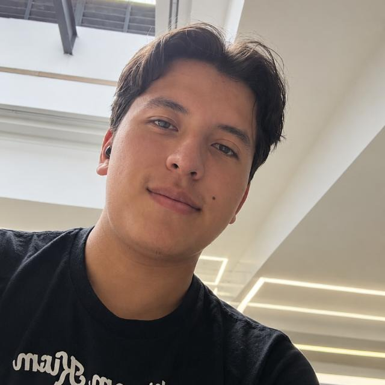
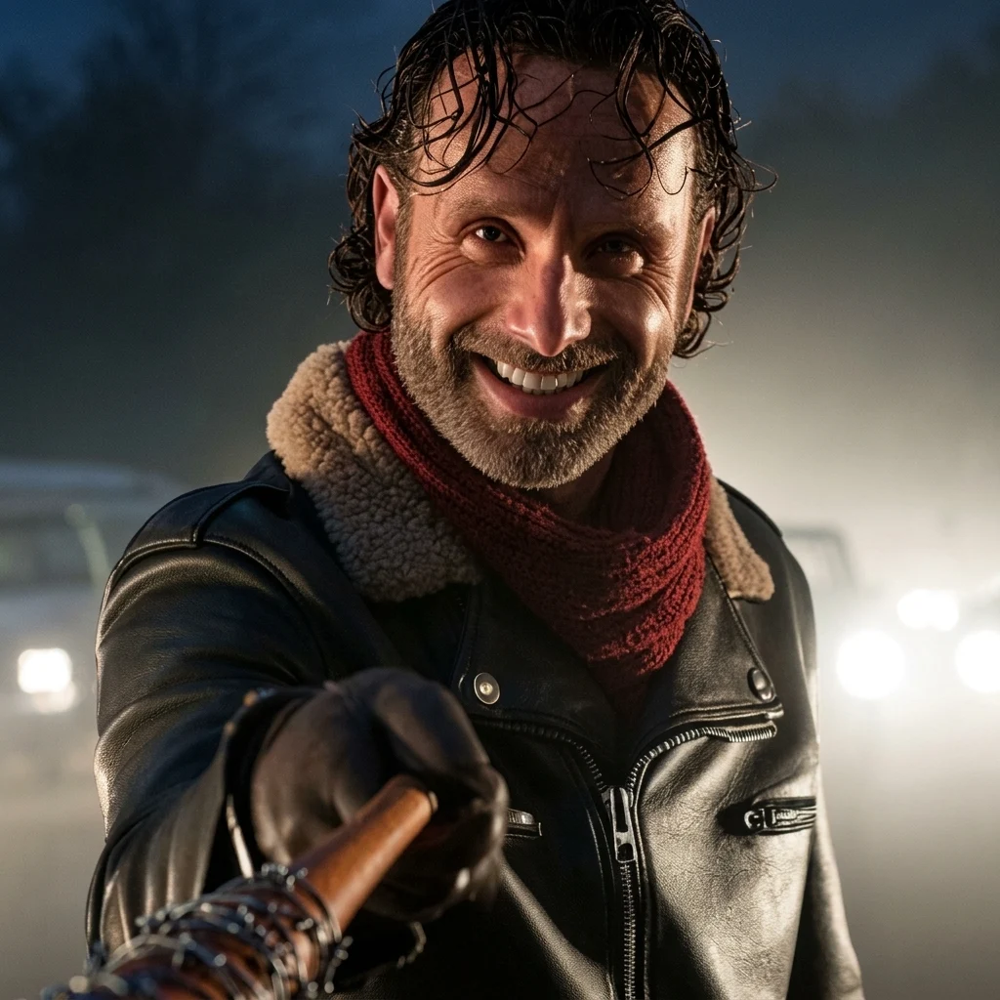
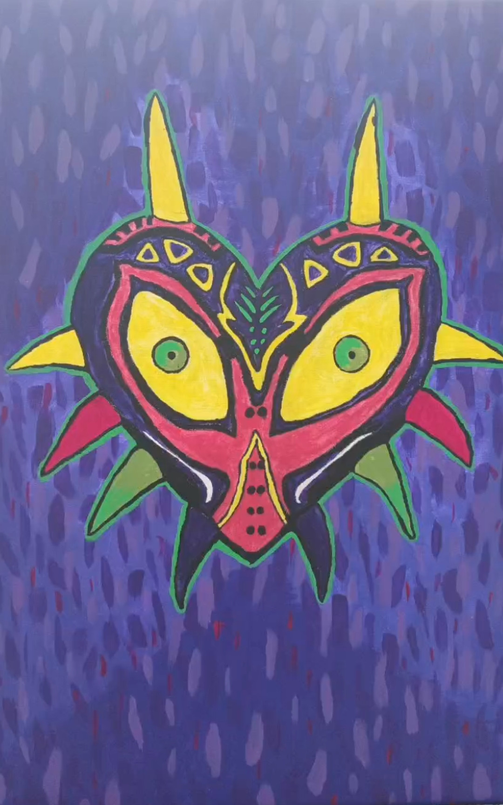
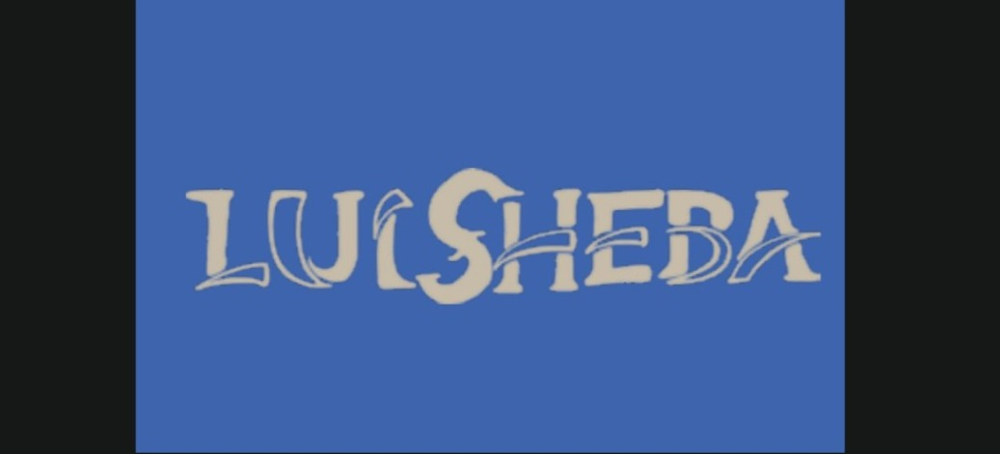
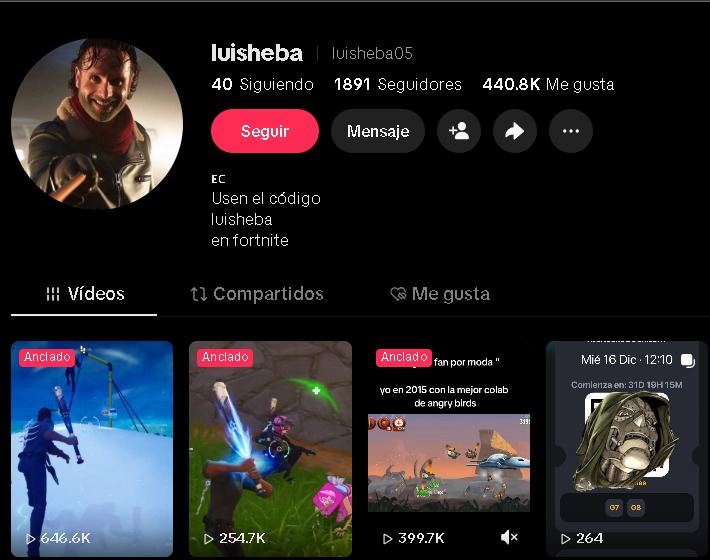

¡Bienvenidos a mi pagina web!

Mi nombre es Sebastian y tengo 19 años, desde pequeño me encantaban los videojuegos y me propuse de mayor a seguir una carrera dedicada a eso. Sigue deslizando y encontraras algunos de mis Trabajos que e realizado hasta el momento.
Sus historias están llenas de personajes extraordinarios, lugares imposibles y aventuras que despiertan nuestra imaginación.
¿Quién es luisheba?

Es un espacio donde comparto mis gustos, ideas y mi pasión por el mundo multimedia y los videojuegos. Me gusta crear contenido, experimentar con nuevas ideas y compartir un poco de lo que hago a través de mis redes sociales, especialmente TikTok y YouTube. Mi objetivo es seguir creciendo como creador de contenido, llegar a más personas y formar una comunidad con la que pueda compartir mis experiencias, proyectos y momentos divertidos. También quiero seguir aprendiendo sobre diseño, edición y tecnología para mejorar cada día y convertir mis ideas en algo especial.
La imagen es una combinacion generada por IA de mis 2 personajes favoritos de The Walking Dead, Rick y Negan.
Conoce mis proyectos
01. Mi contribucion para una Animacion!

Una creacion mia realizada en Blender, la creacion de personajes, el escenario y todo lo que se puede apreciar en la imagen es hecho por mi, exepto la personaje mujer que fue creada por mi compañera y amiga Ailin.
02. Acrilico sobre Lienzo

Esta pintura fue de la materia de Dibujo Creativo de primer ciclo, para ser mi primera pintura no estuvo nada mal, e incluso pinte un objeto representativo de uno de mis juegos favoritos que es el The Lengen of Zelda: Majora's Mask.
03. Produccion Audiovisual

Como examen de produccion audiovisual nos toco hacer una filmacion de un cortometraje de nuetra eleccion, aunque el productor que elejimos realizo un pesimo trabajo dirigiendonos, la experiencia fue divertida con un buen compañerismo con los del grupo.
04. Imagen Corporativa

En este trabajo de Fundamentos De Diseño Grafico nos toco realizar un logo para nuestra imagen corporativa, pasando por un largo proceso de hacer y volver a hacer el logo finalmente cree el diseño que mas me gusto y finalmente lo adapte a distintas implementaciones en productos y documentos formales.
05. Mi red social favorita

TikTok es una de mis redes sociales favoritas del momento, en esta comence a subir mis clips de los videojuegos que grababa con algun que otro momento gracioso mi cuenta fue creciendo poco a poco con mas seguidores y miles de likes hasta la fecha mi video mas visto ronda las 920 mil vistas. Espero seguir creciendo en mi cuenta de TikTok al igual que en la de Youtube donde empeze a subir gameplays de un juego de Realidad Virtual en mis Meta Quest 3, espero poco a poco seguir llenando mi canal de videos y esperando de poco a poco conseguir el apoyo de la gente.
¿Qué videojuegos me gustan?
Uno de los grandes motivos de porque ingrese a la carrera de Diseño Multimedia es mi gusto por los videojuegos, tanto clasicos como actuales. Aqui tendras una lista de los juegos mas importantes que marcaron mi infancia y mi vida hasta la actualidad, algunos que los descubri solo y otros por mi padre.
Clasicos y Modernos
- Goldeneye 007.
- Donkey Kong Country.
- Far Cry 5.
- Fortnite.
- The Legend Of Zelda: Ocarina Of Time.
Los que actualmente juego mas
Para crear esta lista los clasifique por tiempo de juego, desde el numero 1 con mas horas de juego bajando hasta el 5 disminuyendo las horas:
- Fortnite.
- Marvel Rivals.
- The Legend of Zelda: Tears Of The Kingdom.
- Super Smash Bros Ultimate.
- Minecraft.
A cada uno de estos juegos y muchos mas que no inclui en la lista les tengo un cariño especial por que fueron videojuegos que marcaron mi infancia y algunos que me siguen divirtiendo actualmente a pesar de lo viejo que sean me siguen entreteniendo como si fuera la primera vez.
Los videojuegos son la razon mas importante por la cual eleji ser un Diseñador Multimedia ya que me encanta lo que pueden llegar a hacer sentir sus historias a una persona, la emocion, el miedo, la tristeza, etc.
Mi experiencia multimedia
Como amante de los videojuegos y creador de contenido, también disfruto experimentar con el sonido y el video. Estos recursos representan parte de mis intereses dentro del mundo multimedia.
01. Mi espacio sonoro
El sonido es una parte importante de la experiencia de un videojuego, ya que ayuda a crear ambientes, transmitir emociones y acompañar cada aventura.
02. Mi contenido en video
El video me permite compartir mis experiencias jugando y crear contenido para plataformas como YouTube y TikTok. También representa mi interés por la producción audiovisual.
¡Trabajemos juntos!
Si tienes alguna idea o proyecto multimedia, puedes completar este formulario para contarme un poco más sobre tu propuesta.
Este formulario es demostrativo y no almacena ni envía información real. Utiliza únicamente datos ficticios para probarlo.